Kierunek A: wariant A1 i A2 obok siebie
A1 — środek aplikacji jak w E2, barwy talerzy tylko na ikonie i w intro. A2 — ten sam środek; barwy talerzy z ikony w tle okna startowego i pustych stanów (krycie 16% / 20%). Nie ma ich na tablicy „teraz”, przy liczbach kg ani w paskach. Ikona i intro są obecne, bez zmian. Dane na ekranach to [PRZYKŁAD]. Treść: na iOS SF Pro, w makiecie zastępczo Source Sans 3.
Obecna ikona i intro (zostają)
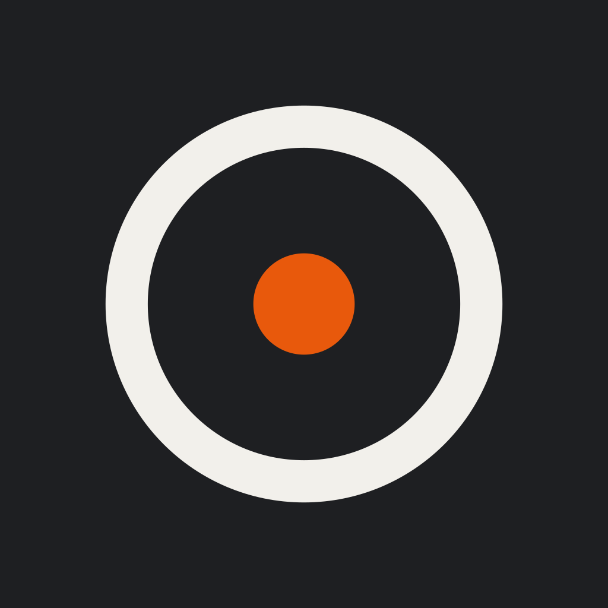
Barwy nawiązania A2 (talerz nałożony na tło, kolejno 25, 20, 15, 10 kg z ikony):
Trening przed treningiem (start) — A2: motyw w tle nagłówka
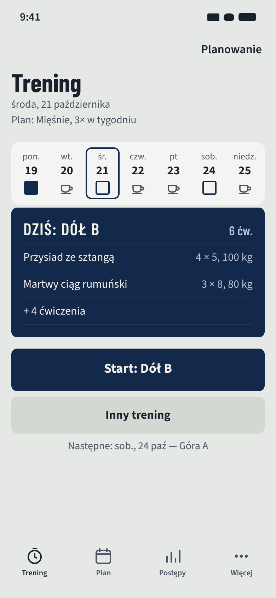
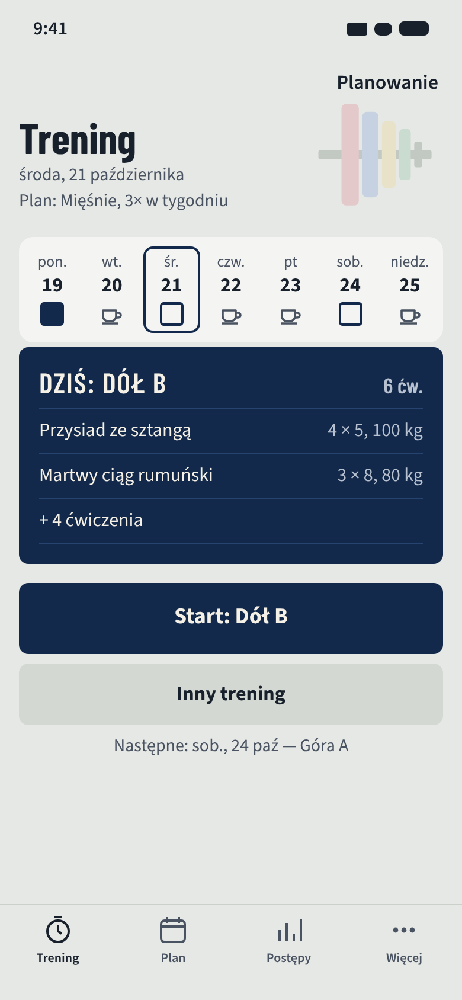
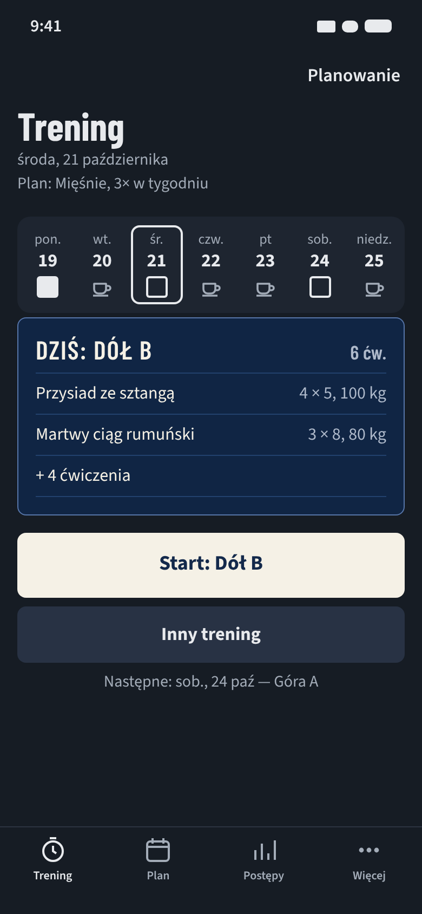
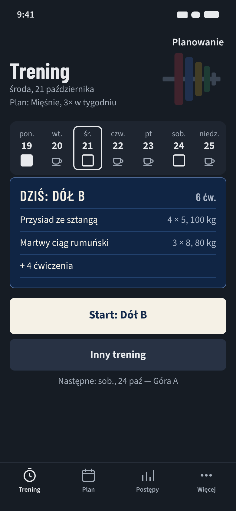
Postępy — pusty stan (ZM-06) — A2: gryf z talerzami w barwach
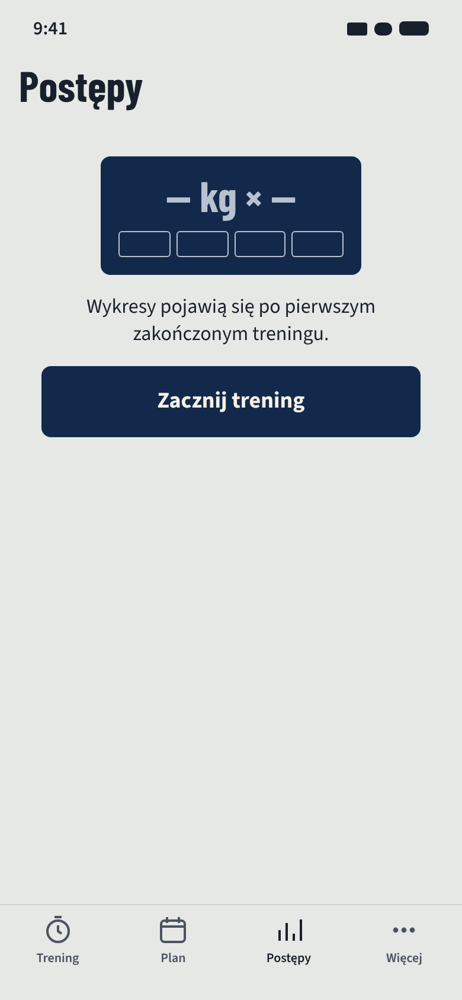
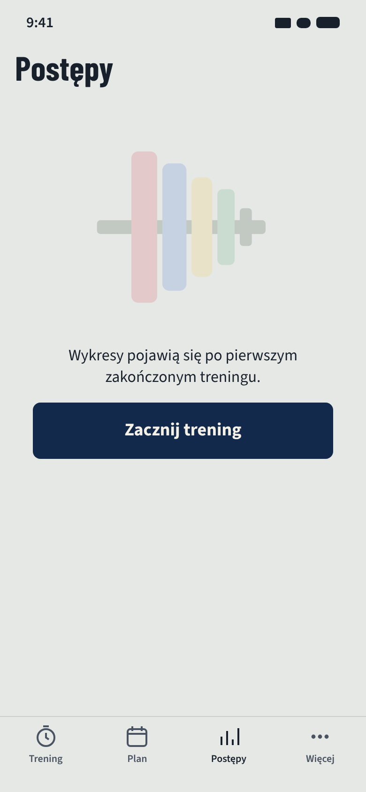
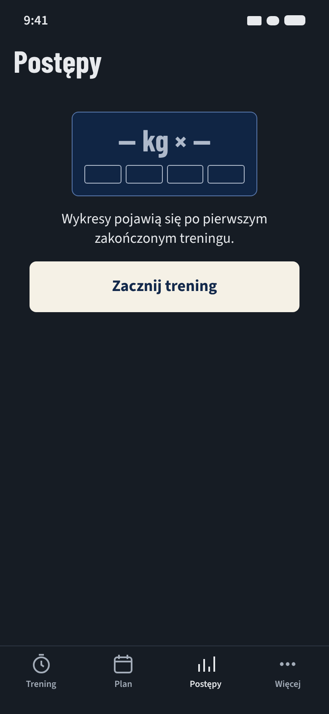
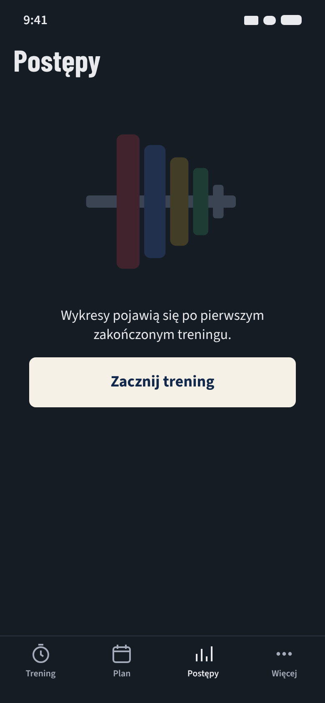
Karta „teraz” — seria (A1 = A2)

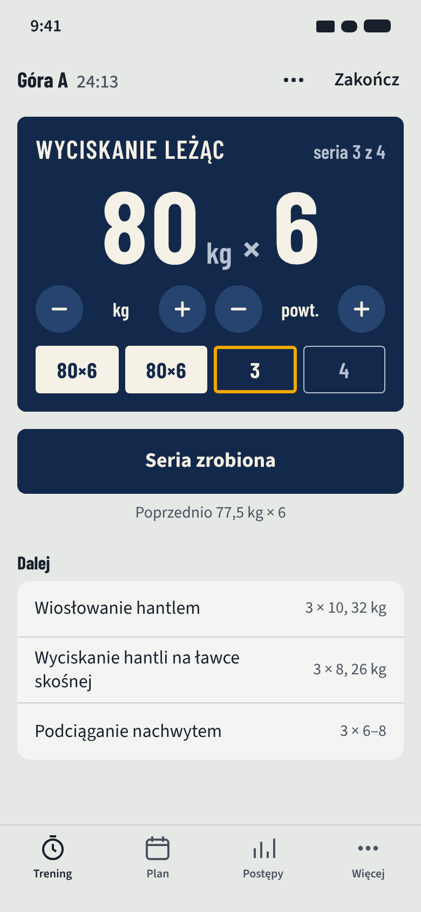
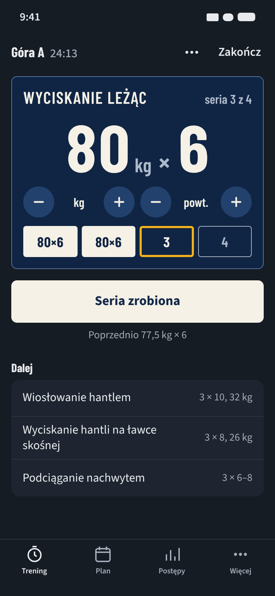

Karta „teraz” — przerwa (A1 = A2)
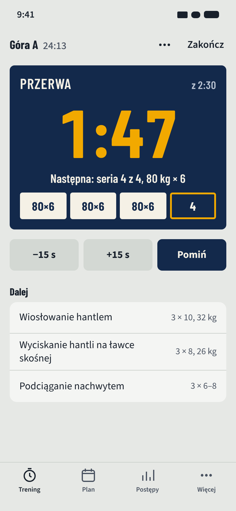

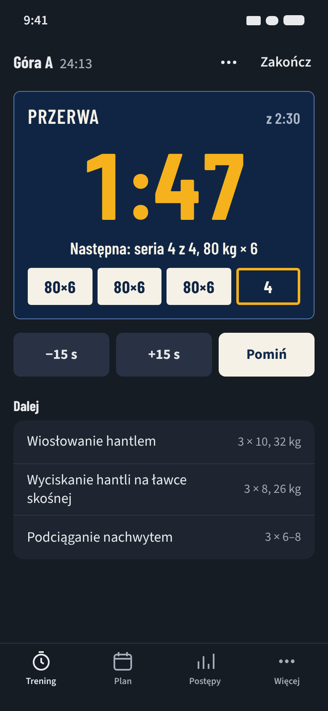

Rekomendacja
A2: łączy rozpoznawalność ikony i intro ze środkiem A bez kosztu czytelności. Barwy są tylko w oknach bez liczb kg. Kompromis: dwie dodatkowe grafiki do utrzymania i wyłączenie przy „Zwiększ kontrast”. Szczegóły i pytania: STOP E2b.